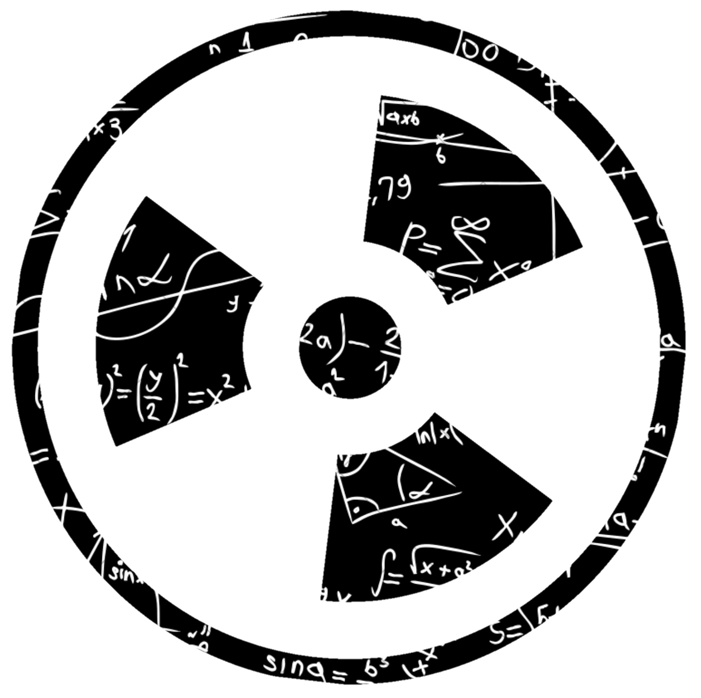

KALKULASI PERISAI RADIASI
☰
Beranda
Hitung Perisai
Kontak
Pilih yang Ingin Dihitung:
Perisai Primer
Perisai Sekunder
Distribusi beban kerja (workload)
Rad Room (all barriers) — semua dinding kecuali lantai & cross-table
Rad Room (chest bucky) — dinding di belakang chest image-receptor
Rad Room (floor or other barriers) — lantai & dinding lain
Fluoroscopy Tube (R&F room)
Rad Tube (R&F room)
Arah/jenis radiasi sekunder (K1sec, Tabel 4.7)
Leakage saja
Side-scatter saja (90°)
Leakage + side-scatter (90°)
Forward/backscatter saja (135°)
Leakage + forward/backscatter (135°) — paling konservatif
Material perisai
Beton (concrete)
Timbal (lead, Pb)
Faktor hunian, T (Tabel 4.1)
T = 1 — ruang administrasi, lab, apotek, resepsionis, ruang tunggu berpenjaga, area bermain anak, ruang rontgen sebelah, ruang baca film, ruang perawat, ruang kontrol sinar-X
T = 1/2 — ruang pemeriksaan/perawatan pasien
T = 1/5 — koridor, ruang pasien, ruang istirahat staf
T = 1/8 — pintu koridor
T = 1/20 — toilet publik, area penjual otomatis, ruang penyimpanan, area luar berkursi, ruang tunggu tanpa pengawasan, ruang tahan pasien
T = 1/40 — area luar lalu-lintas sesaat, parkir tanpa pengawasan, area drop-off, loteng, tangga, lift tanpa pengawasan, gudang petugas kebersihan
Lainnya — isi sendiri
Nilai T kustom (0–1)
Jarak d (m)
Pasien per minggu, N
Target desain goal, P (mSv/minggu)
Hitung perisai
Tebal perisai dibutuhkan
—
Tebal komersial terdekat
—
Transmisi B yang dibutuhkan
—
Rincian Perhitungan
Faktor hunian, T
—
K1sec (kerma sekunder per pasien @ 1 m)
—
Kerma sekunder tak-terlindung, Ksec(0)
—
Parameter fit (α, β, γ)
—